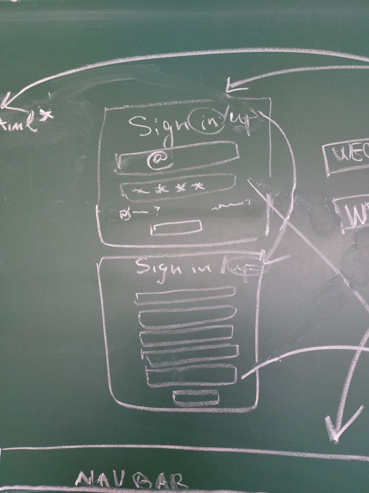

3. Interfață
3.1 Viziune generală
Privire de ansamblu a interfaței aplicației web.
Acesta include miniaturi pentru fiecare secțiune majoră a aplicației: pagina principală, autentificare, bloguri,
grădina mea, magazin, coș de cumpărături, profilul utilizatorului, inbox.
Fiecare pagină va avea un header, body și footer.
3.2 Detaliere
În header se află: logo-ul și butoane, precum Home(pagina principală), About(documentul scholarly), Blog(pagina blogului), Shop(pagina shop-ului), Authentification/Profile(în funcție de starea utlizatorului: nelogat - primul header din imagine, logat - al doilea header din imagine) și Cart(pagina cu coșul de cumpărături)
Footer-ul conține informații de interes precum date de contact și altele.

Pagina principală conține un mesaj de bun venit, secțiune de top sellers și secțiune de latest blogs. Dacă utlizatorul apasă pe un produs, atunci este redirecționat la pagina cu detalii a acelui produs. Dacă utilizatorul apasă pe un blog, atunci acesta este redirecționat respectiv la pagina acelui blog.
Pagina de autentificare unde utilizatorul poate să intre în cont, precum și să își creeze unul. Acesta va fi nevoit să completeze un formular de autentificare care va conține adresa de e-mail și parola în cazul intrării în cont și în cazul creării contului va mai conține și date precum nume și prenume.

Pagina de blogs este o pagină cu articole listate, fiecare cu o imagine reprezentativă, un titlu, un autor, o dată a postării, tag-uri, o scurtă descriere și
butoane pentru citirea completă a articolului. De asemenea, pagina conține o secțiune pentru filtrare după anumite criterii și o secțiune pentru postări recente.
Dacă utilizatorul apasă pe un articol, atunci acesta este redirecționat respectiv la pagina acelui articol(pagina din stânga imaginii).
Această pagină conține articolul complet și informațiile despre articol, precum și comentarii referitoare la acel articol. De asemenea, se găsește o
secțiune de alte articole recomandate.
Pagina shop-ului conține o listă cu toate produsele valabile(cu denumire și preț) pe site ce pot fi sortate sau listate după anumite criterii.
Dacă utlizatorul apasă pe un produs, atunci este redirecționat la pagina produsului respectiv, unde poate vizualiza mai multe detalii cu privire la acesta, îl poate adăuga în coș, și poate vedea și alte produse recomandate de către site.
Pagina constă dintr-o listă de produse salvate de către utilizator împreună cu prețul acestora, cantitatea și prețul total al coșului și un buton de cumpărare.
Dacă utilizatorul apasă pe butonul de cumpărare, acesta este redirecționat către o pagină(de jos) unde își introduce datele personale pentru a completa comanda.
Dacă utilizatorul dă hover pe profil din navigation bar i se deschide un submenu cu mai multe butoane precum: account details(pagina de profil), my garden(pagina grădinii), inbox(pagina inboxului), my blogs(pagina blogurilor personale) și logout(care deloghează utilizatorului).
Pagină cu detalii personale ale utilizatorului, istoric de cumpărături și setări ale contului.
Pagina grădinii utilizatorului, include indicatoare(senzori) pentru starea de sănătate a plantelor și acțiuni recomandate.
Pagină care conține totalitatea notificărilor primite structurată în o listă clară de notificări, fiecare cu titlu, descriere sumară și data primirii.
Pagina de bloguri personale include o secțiune pentru vizualizarea articolelor personale și o altă secțiune dedicată creării de articole noi.
Pagina de profil a altor utilizatori include trei secțiuni principale: informații personale, grădinile cultivate, și articolele publicate. Aceasta permite vizualizarea detaliilor de bază ale utilizatorului, prezentarea grădinilor acestuia și accesul la articolele scrise de utilizator.